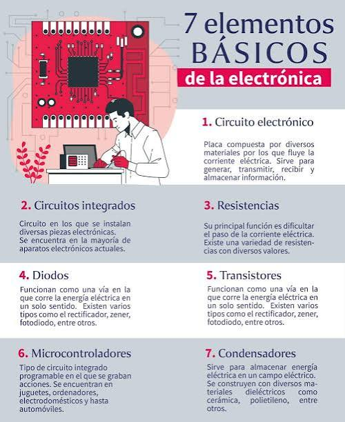

Las telecomunicaciones son la transmisión a distancia de datos, información, voz, imágenes o sonidos a través de señales electromagnéticas, ópticas o electrónicas. Permiten conectar a personas y sistemas en tiempo real sin importar las distancias geográficas.
=======
Telecomunicaciones
Que son
Son medios que permiten enviar información de un lugar a otro.
Ejemplos
Internet
Teléfono
Televisión
Radio
Gracias a ellas podemos comunicarnos rápidamente con otras personas.
>>>>>>> 5821c3851fe91fe8f8346f520283e6825c258744
Componentes Básicos de un Sistema
Todo sistema de telecomunicacion requiere tres elementos clave para funcionar:
Emisor: El dispositivo que genera y envía la información (ej. un smartphone o servidor).
Medio de transmision: El canal físico o inalámbrico por el que viaja la señal (ej. fibra óptica, ondas de radio, cables de cobre).
Receptor: El dispositivo que recibe y procesa la información enviada.
Principales Medios y Tecnologías
Redes Moviles: Permiten la comunicación de voz y datos de alta velocidad en dispositivos móviles.
Fibra Optica: Transmite datos mediante pulsos de luz a través de hilos de vidrio, ofreciendo las velocidades de internet más altas y estables.
Redes Satelitales: Utilizan satélites en órbita para llevar señal a zonas remotas o rurales donde no hay cableado.
Sistemas Inalámbricos (Wi-Fi, Bluetooth): Permiten la conexión entre dispositivos a corta y mediana distancia sin necesidad de cables.

Importancia en la Sociedad Actual
Hoy en día, las telecomunicaciones son el pilar fundamental de la economía global y la sociedad digital. Hacen posible el trabajo remoto, el comercio electrónico, la educación a distancia, el acceso a servicios de salud mediante telemedicina y el entretenimiento digital.
Retos Actuales
Brecha digital: Garantizar el acceso a internet de calidad para comunidades rurales o vulnerables.
Ciberseguridad: Proteger la infraestructura de red y los datos personales frente a ataques cibernéticos.
Sostenibilidad: Reducir el consumo energético de los centros de datos y redes globales.